Contents
%toolbox双目标定 加载Calib_Results_stereo.mat
Create a set of calibration images. close all; clear; clc;o
%load('D:\rongjc的文件夹\双目标定\eyeinhand\eyeinhand\手眼标定5.7\Calib_Results_stereo.mat') path ='手眼标定5.7'; num_of_images = 15;
将所有位姿保存到一个数组中
读入机械手的位置数据
bHg = zeros(4, 4, num_of_images); % 初始化,主要是大小 jiaodu = zeros(3, num_of_images); positions = importdata([path '/坐标2.txt']); for i = 1 : num_of_images %将机器人6坐标转换为4X4坐标系转换矩阵 pos = positions( i, 1:end); location = pos(1:3)* 1000; % 1 q = pos(4:7); %orientation = quat2rotm(q); orientation=[ 2*q(1).^2-1+2*q(2)^2 2*(q(2)*q(3)-q(1)*q(4)) 2*(q(2)*q(4)+q(1)*q(3)); 2*(q(2)*q(3)+q(1)*q(4)) 2*q(1)^2-1+2*q(3)^2 2*(q(3)*q(4)-q(1)*q(2)); 2*(q(2)*q(4)-q(1)*q(3)) 2*(q(3)*q(4)+q(1)*q(2)) 2*q(1)^2-1+2*q(4)^2]; % 1 jiaodu(1:3,i)=pos(4:6)*pi/180.0; %orientation = eul2rotm(jiaodu(1:3,i)','XYZ'); figure(3); plotCamera('Location',location,'Orientation',orientation','Size',20); hold on pcshow([0,0,0], [1.0,0,0], 'VerticalAxisDir','down','MarkerSize',40); bHg(1:3, 1:3, i) = orientation; bHg(1:3, 4, i) = location'; bHg(4, :, i) = [0 0 0 1]; end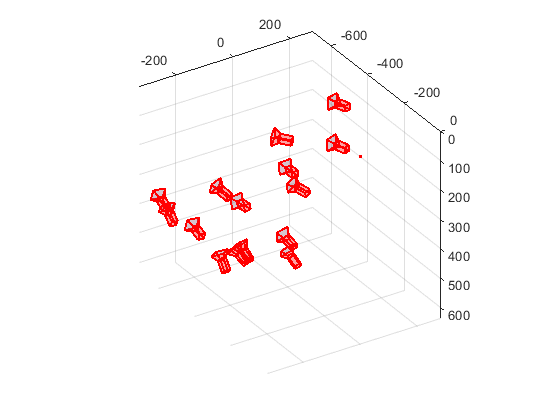
将所有位姿保存到一个数组中
cHw = zeros(4, 4, num_of_images);
for i = 1 : num_of_images
直接取标定结果中的数据作为外参
rotation_vector = rotationVectorToMatrix(cameraParams.RotationVectors(i,:));
translation_vector = cameraParams.TranslationVectors(i,:);
Compute camera pose ->将相机位置显示在标定板坐标系中
[orientation, location] = extrinsicsToCameraPose(rotation_vector, ... translation_vector); figure(1); plotCamera('Location',location,'Orientation',orientation,'Size',20); hold on pcshow([0,0,0], [1.0,0,0], 'VerticalAxisDir','down','MarkerSize',40); hold on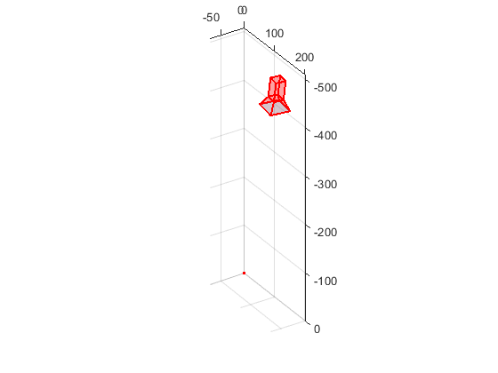 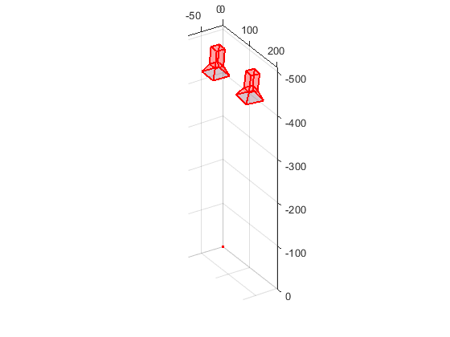 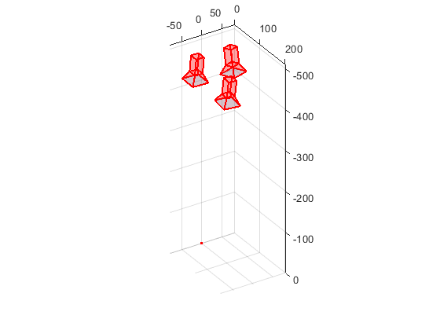 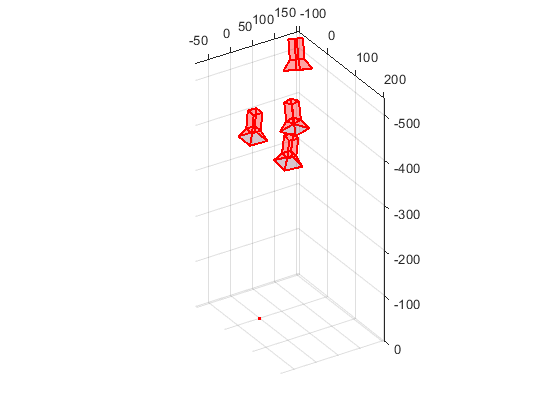 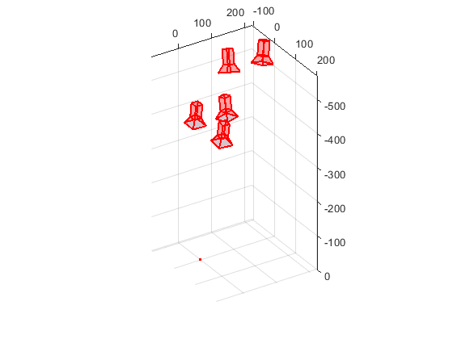 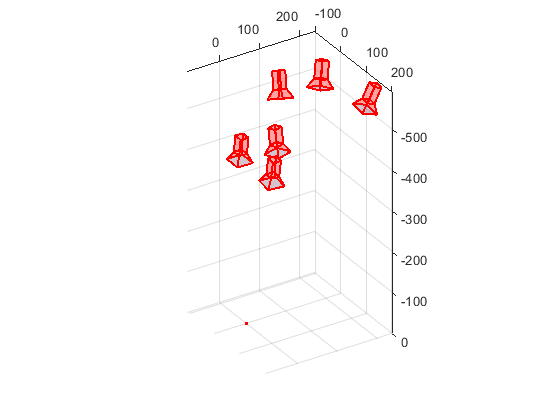 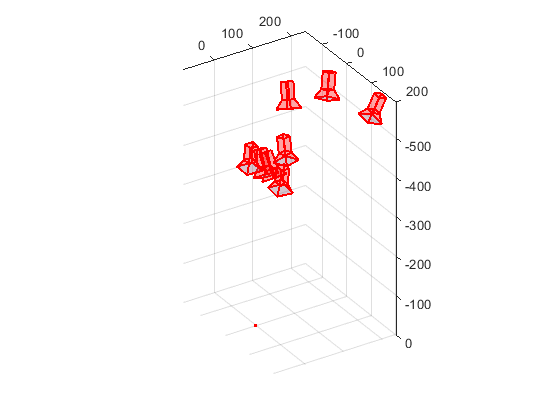 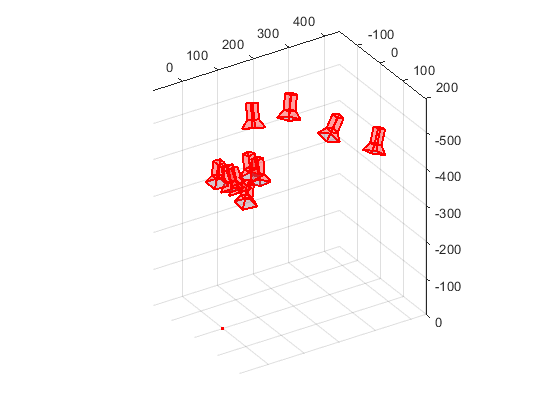 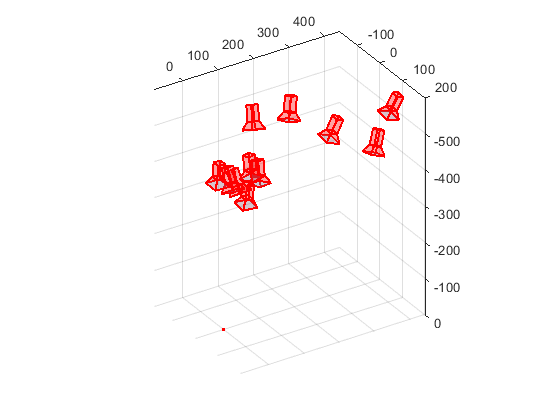
 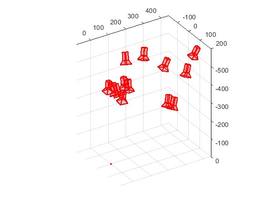 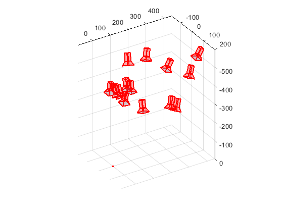 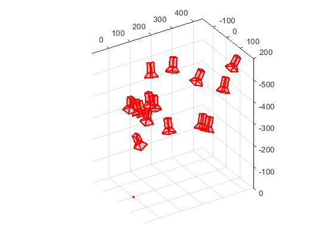
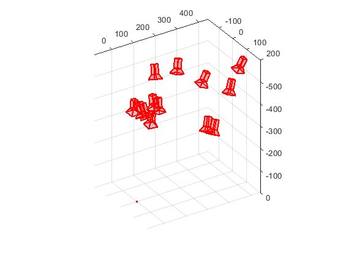 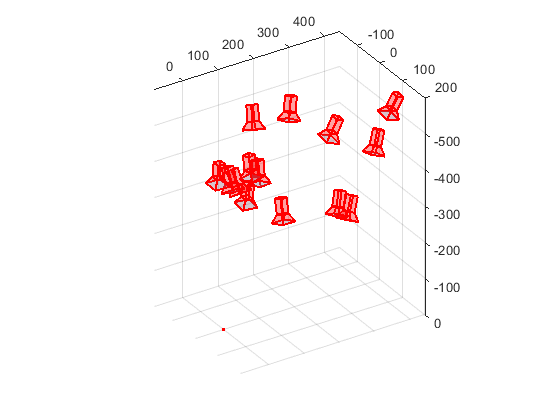 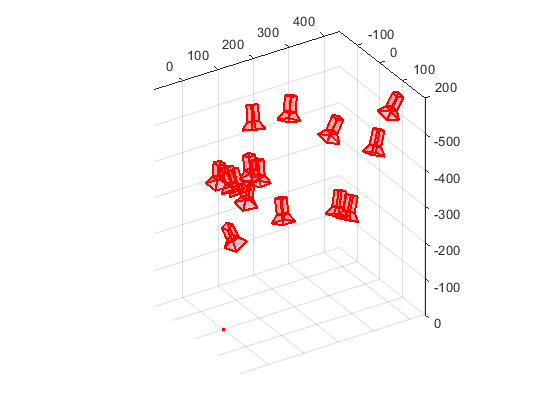 保存相机位姿
cHw(1:3, 1:3, i) = rotation_vector';
cHw(1:3, 4, i) = translation_vector';
cHw(4, 1:4, i) = [0 0 0 1];
end
手眼标定
gHc = handEye(bHg, cHw); % bHg为拍摄时记录的坐标，为末端相对机器人基座标的转换矩阵 % cHw为双目标定后，相机相对标定板的位置转换矩阵，载入‘Calib_Results_stereo.mat’即可 % 使用handEye函数，进行手眼标定 % gHc = handEye(bHg, cHw); % 获取gHc相机相对于机器人末端的位置转换矩阵 disp(gHc); rot_vect = -rotationMatrixToVector(gHc(1:3, 1:3)); theta = norm(rot_vect); r = rot_vect / theta; disp('旋转向量:'); disp(r); disp(['旋转角' num2str(theta * 180 / pi)]);
-0.9993 0.0339 0.0168 35.1517
-0.0343 -0.9992 -0.0229 115.2269
0.0161 -0.0235 0.9996 113.5544
0 0 0 1.0000
旋转向量:
-0.0082 0.0116 -0.9999
旋转角178.047
显示相机在机器人坐标位置
bHc= bHg(:, :, 1)*gHc; figure(4); plotCamera('Location', bHg(1:3,4,1)','Orientation', bHg(1:3, 1:3, 1)','Size',20); hold on plotCamera('Location',bHc(1:3, 4),'Orientation', bHc(1:3, 1:3)','Size',20); hold on pcshow([0,0,0], [1.0,0,0], 'VerticalAxisDir','down','MarkerSize',40);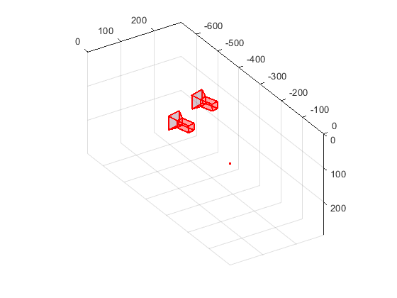